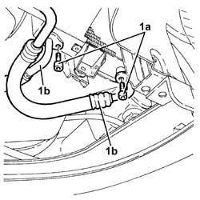
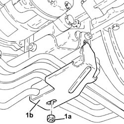
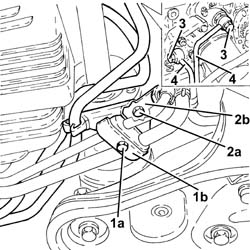
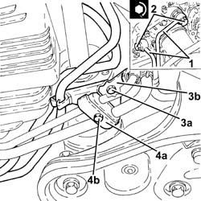
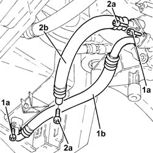

1084C38 ENGINE OIL DELIVERY AND RETURN PIPES TO COOLING RADIATOR - R + R
- Path
- Procedures > 10 ENGINE UNIT > 1084 ENGINE LUBRICATION SYSTEM > 1084C ENGINE OIL COOLING CIRCUIT > 1084C38 ENGINE OIL DELIVERY AND RETURN PIPES TO COOLING RADIATOR - R + R
- Kind
- repair procedure (removal / refitting; the operation number is the code)
- Applies to
- engines: 3.2 V6, 1.9 JTD 16V; all production periods
- Interactive page
- https://sloeber94.github.io/elrnDB-aGt/en/#/125001169
Applies to: engines: 3.2 V6; all production periods
 Removing
Removing
 Refitting
RefittingPosition the vehicle on the ramp
Proceed with removal
Op. 7055B54 UNDER-ENGINE GUARD - R R
1. Undo the bolts (1a) and disconnect the engine oil supply and return pipes to the cooling radiator (1b), radiator side.

Applies to: engines: 3.2 V6; all production periods
1. Undo the nut (1a) and remove the engine oil/power assisted steering fluid pipes lower mounting bracket (1b).

Applies to: engines: 3.2 V6; all production periods
1. Undo the nut (1a) and remove the engine oil/power assisted steering fluid pipes lower mounting bracket (1b).
2. Undo the nut (1a) and remove the engine oil/power assisted steering fluid pipes upper mounting bracket (1b).
3. Undo the connectors and disconnect the cooling radiator engine oil supply and return pipes, engine oil filter mounting side.
4. Remove the cooling radiator engine oil supply and return pipes.

Applies to: engines: 3.2 V6; all production periods
Refitting
Removing1. Place the cooling radiator engine oil supply and return pipes back in their housings.
2. Connect the engine oil supply and return pipes to the engine cooling radiator, engine oil filter mounting side and tighten the connectors to the recommended torque.
 | Fastening | Component | Ø | Value (daNm) |
|---|---|---|---|---|
2 | - | - | - | - |
3. Place the engine oil/power assisted steering fluid pipes upper mounting bracket (3a) back in its housing and secure it using the bolts (3b).
4. Place the power assisted steering pipes lower mounting bracket (4a) back in its housing and fasten it using the bolt (4b).

Applies to: engines: 3.2 V6; all production periods
Place the engine oil/power assisted steering fluid pipes lower mounting bracket back in its housing and fasten it using the nut.
Connect the engine oil supply and return pipes to the engine cooling radiator, radiator side and tighten the bolts.
Refill the engine oil lubrication system
Op. 0010T11 ENGINE OIL CHECK LEVEL AND TOP UP.
Proceed with refitting
Op. 7055B54 UNDER-ENGINE GUARD - R R.
Remove the car from the ramps.
Applies to: engines: 1.9 JTD 16V; all production periods
Removing
RefittingPosition the vehicle on the ramp
Proceed with removal
Op. 7055B54 UNDER-ENGINE GUARD - R R
1. Undo the bolts (1a) and remove the engine oil supply pipe to the cooling radiator (1b).
2. Undo the bolts (2a) and remove the engine oil return pipe from the cooling radiator (2b).

Applies to: engines: 1.9 JTD 16V; all production periods
Refitting
RemovingPlace the engine oil return pipe from the cooling radiator back in its housing and secure it using the bolts.
Place the engine oil supply pipe to the cooling radiator back in its housing and tighten the bolts.
Proceed with refitting
Op. 7055B54 UNDER-ENGINE GUARD - R R.
Refill the engine oil lubrication system
Op. 0010T11 ENGINE OIL CHECK LEVEL AND TOP UP.
Remove the car from the ramps.